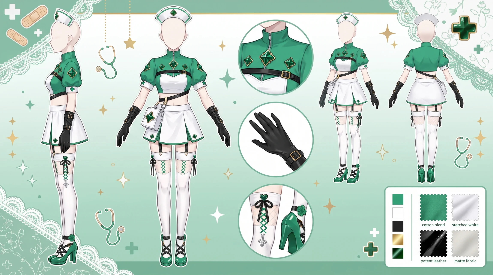
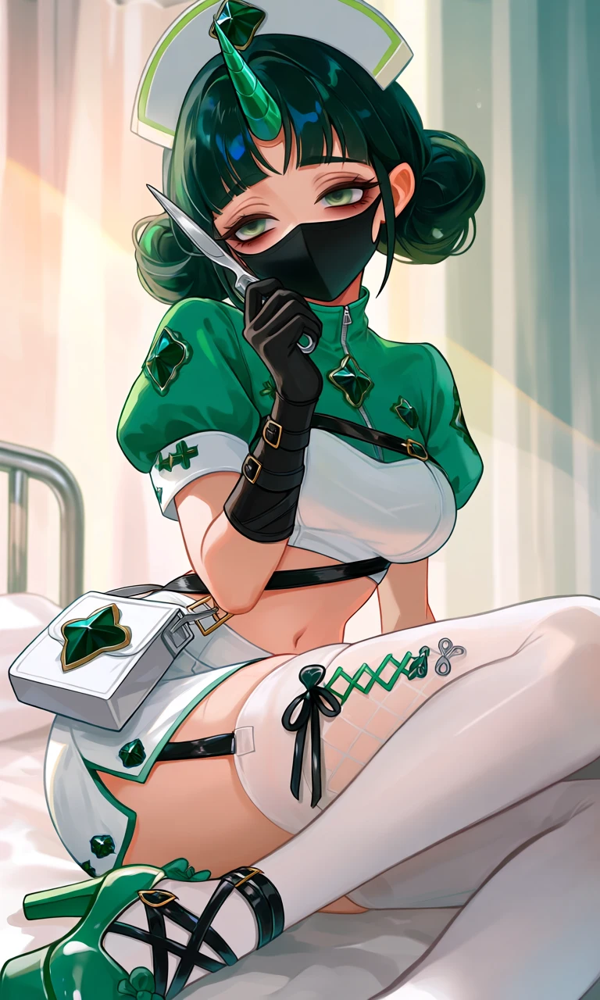
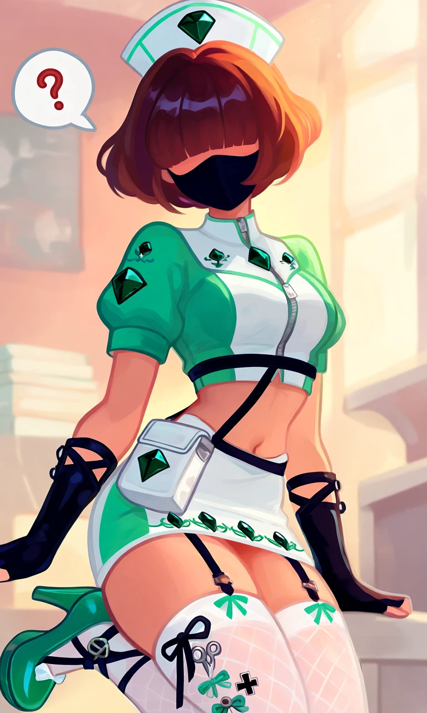

Clover First Aid

Outfit Prompt
She is wearing
A classic white nurse’s cap with light green trim and a prominent dark green gemstone on the front.
A black medical face mask covers the lower half of her face, leaving only the eyes visible.
A short-sleeved, cropped green-and-white nurse top with a high collar and a zipper.
Multiple dark green gemstones are embroidered across the chest and shoulders.
Black fingerless gloves that reach the mid-forearm, with strappy details.
A small white medical-style pouch hangs at the hip, decorated with a large dark green gemstone.
Thin black straps and belts cross the torso, giving a slightly bondage-inspired or tactical medical look. showing her belly button.
An extremely short white mini-skirt with green accents and more dark green gemstone motifs along the hem.
Sheer white thigh-high stockings with a subtle diamond/net pattern near the top.
Black garter straps and green cross-laced details secure the stockings to the upper thighs.
Green platform high-heeled shoes with black straps that wrap around the ankles and feet in an X-pattern, plus small decorative bows or buckles.
Additional small medical motifs (scissors, crosses) are tied with black ribbon near the right thigh as decorative elements.
Outfit Examples



